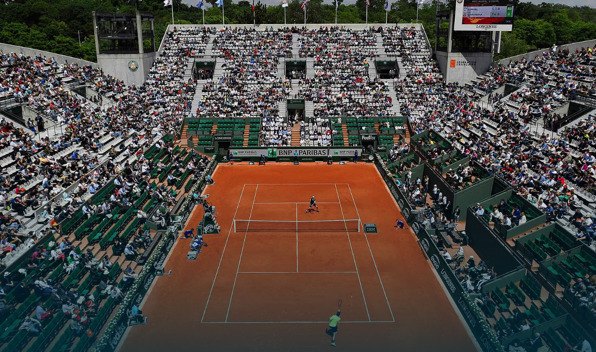
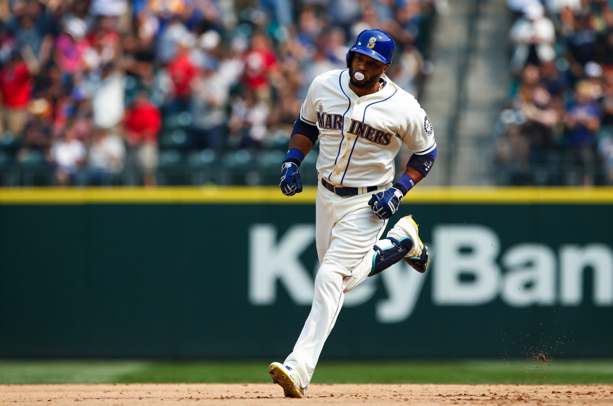
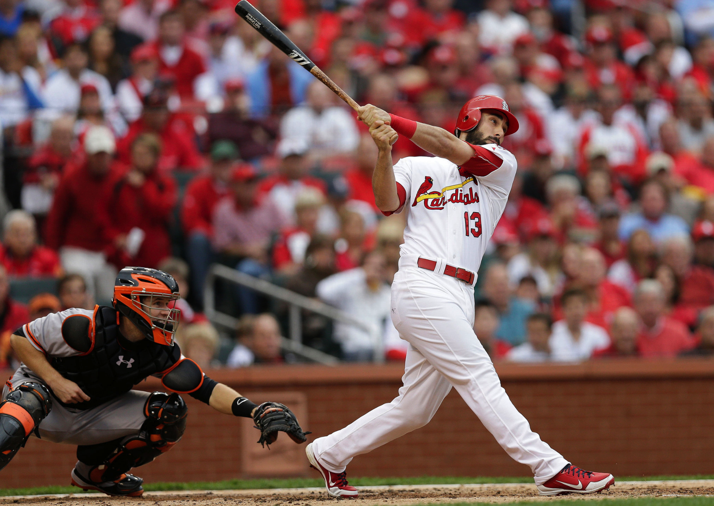

Tennis
May 26, 2016
2016 French Open Preview
By Justin Jones
What to watch for, intriguing matches, and predictions

MLB
May 25, 2016
The Resurgence of Robinson Canó
By Matt Dengler
Once criticized heavily for his 2015 slump, Canó has left the doubters in the dust and regained the favor of the Seattle faithful

MLB
May 24, 2016
Matt Carpenter’s Rocky Road to The Show
By Viraj Patel
From a fast-food diet to a two-time all-star, Matt Carpenter has ridden a bumpy roller coaster to MLB success